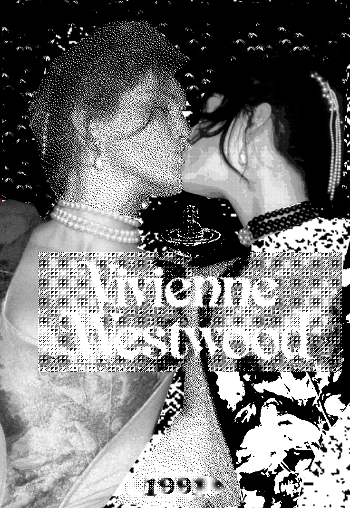
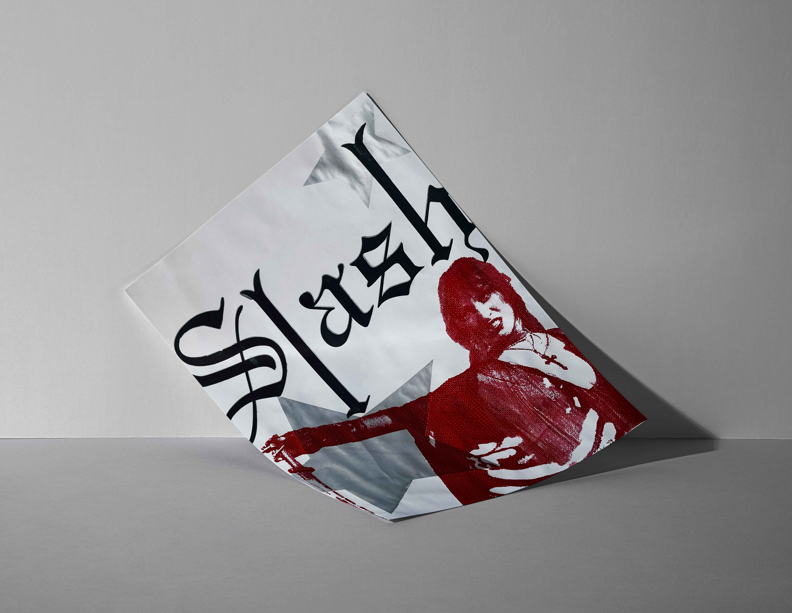
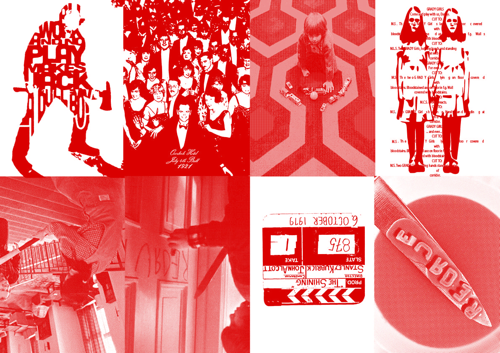
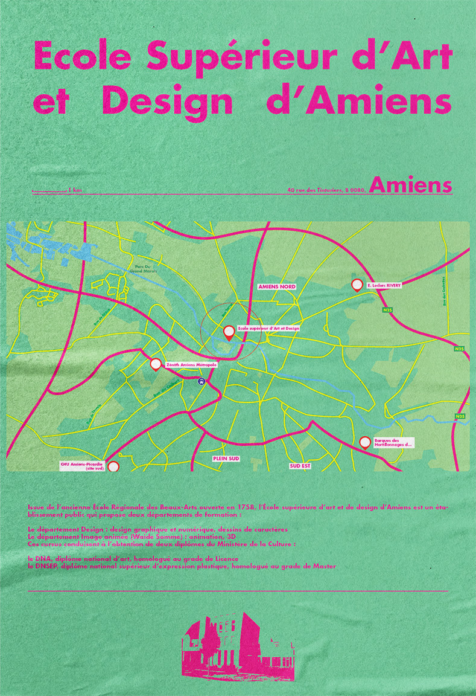

✦ Ces projets sont des moyens d'expérimenter et de me familiariser avec différentes techniques importantes, tel que le principes des trames, la risographie, la cartographie, la sérigraphie, ...
Trames

©
Sérigraphie

©
Risographie

©
✦ Cartographie

©
Réflexion personnelle
Ces différents projets ont été très enrichissant en terme de connaissance des possibles pour les autres projets que j'ai pu faire.